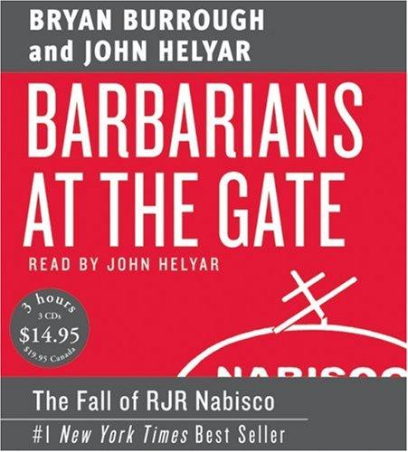

Library › Money & Finance
Barbarians at the Gate: The Fall of RJR Nabisco — Summary & Key Lessons

The $25 billion leveraged buyout that defined an era: a CEO who forgot he worked for shareholders, and the bankers who turned greed into an art form.
📖 OPEN THE FULL INTERACTIVE BREAKDOWN →🌐 Read it in Hindi, Hinglish, Gujarati, Tamil & 22 more languages — free, with audio.
💡 The Big Idea
In October 1988, RJR Nabisco CEO Ross Johnson (famous for the company jet's private doghouse, the Aerie meetings, and a $325 million bet on smokeless cigarettes that smokers hated) stunned his board with a management-led buyout at $75 a share: using debt to take the company private, with management on top. The board (rightly) smelled a lowball, opened the process, and Wall Street descended: KKR, Forstmann Little, First Boston, Goldman, Salomon, Shearson with its absurd 'Japan money' fantasy. Six weeks of greed theater followed: hostile bids in the Wall Street Journal, bankers billing millions to pitch valuations nobody believed, advisors conflicted on every side, and a price that climbed from $75 to $109 a share ($25 billion, a record that stood for years). KKR won, the banks collected ~$1 billion in fees, Johnson exited with a $53 million parachute, and the company spent two decades unwinding the debt. The book's twin subjects: how an agency problem (managers forgetting who owns the company) meets a fee machine (Wall Street monetizing other people's money), told with novelistic precision.
🧠 The 8 Key Lessons
Lesson 1: When Managers Forget Who Owns the Company
Johnson's Bid
Ross Johnson's management buyout pitch (take the company private at a price set by the very managers who ran it) exposed the era's core agency failure: executives treating a public company as personal property. The board's smart move (rejecting, opening the auction) was governance working late but working. The founder lesson: the moment your incentives diverge from your owners', assume the market will force the conversation at the worst possible price, for someone. Governance is cheaper before it's urgent.
📖 Example: The board's visceral reaction ('this smells') came from years of accumulated evidence: the jets, the Aerie retreats, the doghouse for Johnson's dog in the company hangar, and finally a bid priced to transfer value from shareholders to management. Read the full example →
⚡ Do this: Write down your company's ownership today (shareholders, family, employees). Then audit one expense or privilege you'd feel awkward explaining to them. That discomfort is your agency gap; close it before someone else does.
Lesson 2: An Auction Reveals What Silence Hides
The $75 That Became $109
Johnson's strategy depended on a private, lowball process; the board's counter was a proper auction. The competitive tension lifted the price 45 percent, transferring billions to shareholders. The negotiation lesson: any asset sold without competition is sold at the buyer's discount; whether selling a company, raising a round, or negotiating a salary, ALWAYS manufacture alternatives. A single counterparty is a subsidy you're paying them.
📖 Example: KKR's final $109 bid was billions above where the process started, purely because five groups competed; the fees and the price both flowed from the board's refusal to take the first envelope. Read the full example →
⚡ Do this: Before your next major negotiation, list three alternatives you could credibly activate. If you can't name three, fix that before the meeting, not during it.
Lesson 3: The Fee Machine Feeds on Volume, Not Value
A Billion in Fees
The LBO war generated roughly a billion dollars in fees for bankers, lawyers and advisors, many paid for pitches and analyses regardless of outcome: Wall Street's incentive was to LENGTHEN the process and RAISE the stakes, not to close the best deal. The lesson for buyers and founders: your advisors' economics are not your economics; ask what happens to their payday if you walk away, and structure skin-in-the-game accordingly.
📖 Example: First Boston's floating 'Japan money' bid (backed by a prospectus of little substance) was worth submitting because the fee upside dwarfed the credibility cost: the book shows rational bankers making individually rational, collectively absurd choices. Read the full example →
⚡ Do this: Review your advisor and agency contracts this quarter: what gets paid when nothing closes? Convert success fees to carry more weight than effort fees, or diversify your advisors.
Lesson 4: Hubris Has a Runway and Then a Wall
The Aerie Years
Johnson's RJR was a case study in acquired entitlement: the Atlanta headquarters culture, the seven-figure retreats, the jets, the smokeless cigarette project run on conviction and no user feedback. None of it was illegal; all of it priced the company for a takeover the moment its stock stagnated. The lesson: operational extravagance is silently priced by markets; when your returns lag your lifestyle, you are inventory waiting for a buyer.
📖 Example: Premiere (the $325 million smokeless cigarette that smokers compared to 'eating burnt lettuce') consumed capital while competitors compounded: the linked case study is the grave of exactly that conviction-over-feedback method. Read the full example →
⚡ Do this: List your company's three biggest discretionary spends. For each, write the return it defends. Any spend without a defensible return is a takeover invitation; cut one this quarter.
Lesson 5: Hostile Bidding in Public Changes Everyone's Math
The Wall Street Journal Maneuver
When one camp leaked its bid to the press mid-auction, the process fused with public markets: RJR's stock tracked the bidding war, the board's options narrowed, and every camp's leak became a strategic weapon. The modern parallel is the press-driven M&A and fundraising theater every founder now operates inside. The lesson: information you release is a bargaining chip; someone in the room is pricing your silence and your leaks, so control the tape deliberately.
📖 Example: The pre-dawn Wall Street Journal story (planting a rival's number) moved the stock before the board met: the most valuable real estate that week wasn't the boardroom, it was page one. Read the full example →
⚡ Do this: Write your disclosure policy for your next big negotiation: what's public, what's leaked-on-purpose, who speaks to press. Decide BEFORE someone else decides for you.
Lesson 6: Debt Discipline Is Real Until It Isn't
The LBO's Fine Print
The LBO thesis (debt forces discipline on wasteful managers) had real content: KKR's deal imposed cash-flow rigor RJR had never known. But the same debt constrained every good decision for a decade (underinvestment in brands, forced asset sales), and the linked case study is the era's tombstone: leverage converts every downturn into an extinction event for the unprepared. Debt is a tool with a reverse gear that only works on smooth roads.
📖 Example: RJR's post-buyout years featured fire sales (and the eventual breakup) because interest obligations ate the cash that reinvestment required: the discipline became dictation. Read the full example →
⚡ Do this: Model your company's debt service against a 30 percent revenue drop. If the model breaks before year two, refinance, deleverage, or build the buffer this quarter.
Lesson 7: Process Legitimacy Is the Board's Only Product
The Special Committee
The book's quiet hero is the independent committee process: advisers firewalled from management, bids scored against stated criteria, minutes kept against future lawsuits. It wasn't glamorous, and it was attacked from every side, but it transferred billions to shareholders and survived litigation. The governance lesson: when stakes are existential, process IS the product; a fair process is the only defense a fiduciary has after the fact.
📖 Example: Every losing camp sued or threatened to sue; the special committee's clean record (documented criteria, equal access) is what ended the challenges, proving the paper trail was the real deliverable. Read the full example →
⚡ Do this: For your next major internal decision (equity split, exec comp, sale), run it through a written process with criteria set in advance. The paper you write today is the lawsuit you never have.
Lesson 8: Eras End When the Fee Model Detaches From Value
The Barbarians Recede
The 1980s LBO machine ended not with scandal but with arithmetic: junk-bond financing dried up, targets got expensive, and the fee model outran the value creation. The systemic lesson for founders and investors: any era's dominant financial technique ends when intermediaries earn more than owners do. Watch your industry's fee layers; the one that pays intermediaries best is the one about to break.
📖 Example: By 1990, the same banks that scored nine figures on RJR were writing down junk portfolios; the machine's parts (techniques, talent) survived, the era didn't, and KKR itself spent years just owning its prize sanely. Read the full example →
⚡ Do this: Map the fee layers in your industry (platforms, brokers, agents, consultants). Calculate what owners net after all of them; whoever captures the most is the actual boss of your market.
✅ 5-Step Action Plan
- Audit one expense you couldn't defend to your owners; close the agency gap.
- Manufacture three credible alternatives before every major negotiation.
- Restructure advisor incentives so success pays more than effort.
- Model debt service against a 30 percent revenue drop; fix it this quarter.
- Run your next existential decision through a documented fair process.
⚠️ When This Doesn't Work
Burrough and Helyar (Wall Street Journal reporters) reconstructed scenes from hundreds of interviews; dialogue is reconstructed and several principals (notably Johnson and KKR's Kravis) disputed their portrayals for years. The book is hostile to everyone equally, which is its fairness. Later history (the deal's eventual unwinding, the era's protagonists' arcs) postdates it. Read it as the definitive novelistic record of 1980s deal fever, and remember its quiet warning: the barbarians were invited by the stewards.
💀 The Graveyard Proves It
🚬 RJR's Smokeless Cigarette — $325M for a Cigarette Smokers Hated. Burn: $325M, 4 months on shelves. Read the full case study →
💬 Best Quotes from Barbarians at the Gate: The Fall of RJR Nabisco
- “This was greed at its most raw, played out with shareholder money by men paid to be stewards.”
- “The board had one question: whose side are the managers actually on?”
- “Everyone in the room was spending someone else's money, and everyone knew it.”
Interactive version: mark lessons as read, listen in your language, share quote cards.